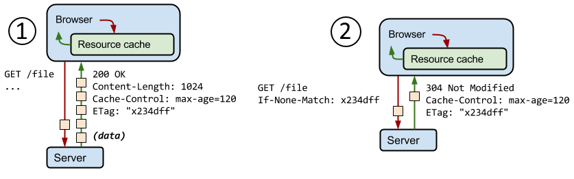

Optimize Resources
Minify CSS and JS
One JavaScript file and one CSS file are not currently minified in this page.
- Find them using PageSpeed Insights
- Minify them using refresh-sf.com
- Alternatively, run the gulp task that compresses the JS and CSS. This also concatenates all files into a single output. Be careful, this does not remove dead code!
> gulp minify
[01:17:26] Using gulpfile ~\Documents\GitHub\Web-Performance-Workshop\gulpfile.js
[01:17:26] Starting 'minify-styles'...
[01:17:26] Starting 'minify-scripts'...
[01:17:26] Finished 'minify-scripts' after 272 ms
[01:17:27] Finished 'minify-styles' after 1.27 s
[01:17:27] Starting 'minify'...
[01:17:27] Finished 'minify' after 13 μs
Compress CSS and JS
- Open the audit tab on Chrome's Dev Tools and run a performance audit against this page.
- Run the same audit against the live version of the site here
- Why is compression not present locally? Comment on
Content-Encoding:gzip
- You can also check for resources that are missing compression using gzipwtf.com
Cache CSS and JS
- Open Chrome's dev tools, go to the Network tab and look at the response headers on the jQuery JS request
- Cache-Control: determines who can cache the response, under which conditions, and for how long (in seconds)
- no-cache: always makes a round trip, but download can be prevented with etags
- no-store: completely disallows cache
- public: can be cached by anyone
- private: can be cached by the browser, but not others (not on CDN for example)
- Etag: after the cache expires, if the fingerprint (etag) is still the same then the resource has not changed and we can skip the download
- More info here
Cache Control Example
In this example exchange the server returns a 1024 byte response, instructs the client to cache it for up to 120 seconds,
and provides a validation token (“x234dff”).
The second request is sent after the cache has expired. However, using etags we can detect that the content has not changed and
prevent a download.

Remove unused styles
- Again, open the audit tab on Chrome's Dev Tools and run a performance audit against this page. Check for unused CSS
- You'll be able to see which rules are currently not being used by the page.
- unused-css.com is a paid service that does this for you.
- Our you can use the gulp task below
> gulp unused-css
[01:43:03] Using gulpfile ~\Documents\GitHub\Web-Performance-Workshop\gulpfile.js
[01:43:03] Starting 'unused-css'...
[01:43:04] Finished 'unused-css' after 1.49 s